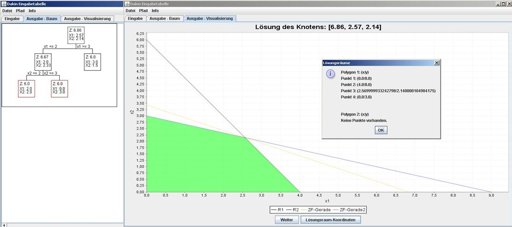

Dakin 2.0

Beschreibung des Solvers:
Mit dieser Methode kann aus einem ganzzahligem Optimierungsproblem eine ganzzahlige Lösung berechnet werden. Die Lösung des Optemierungsproblems wird in einem Lösungsbaum dargestellt und kann auch grafisch dargestellt werden.
Performance:
Das Standardbeispiel funktioniert, jedoch kann es zu Fehlern kommen bei der graphischen Lösung. Dies ist ein Prototyp!
© HTWG Konstanz